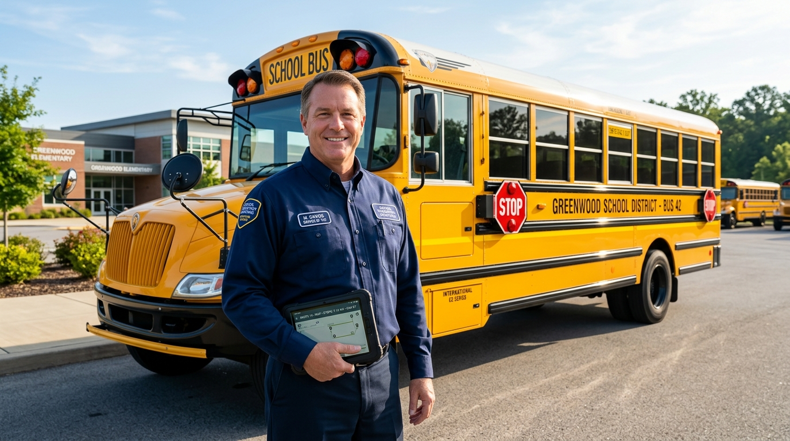
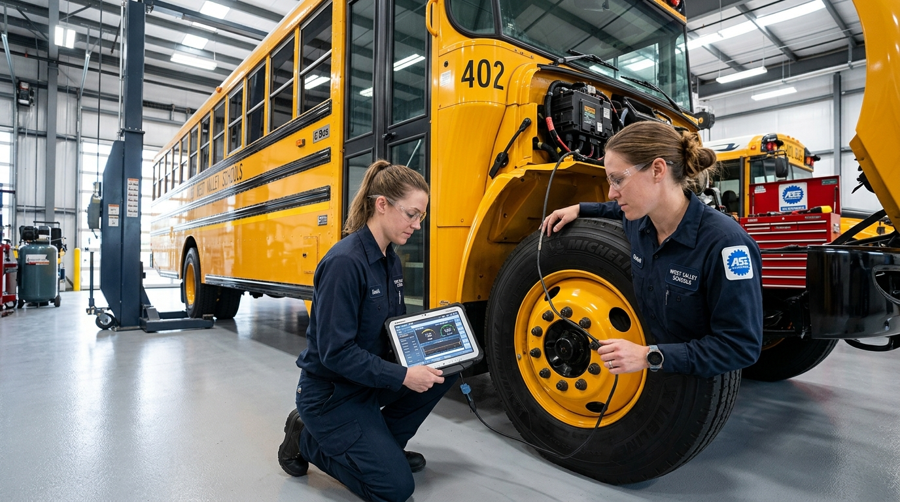
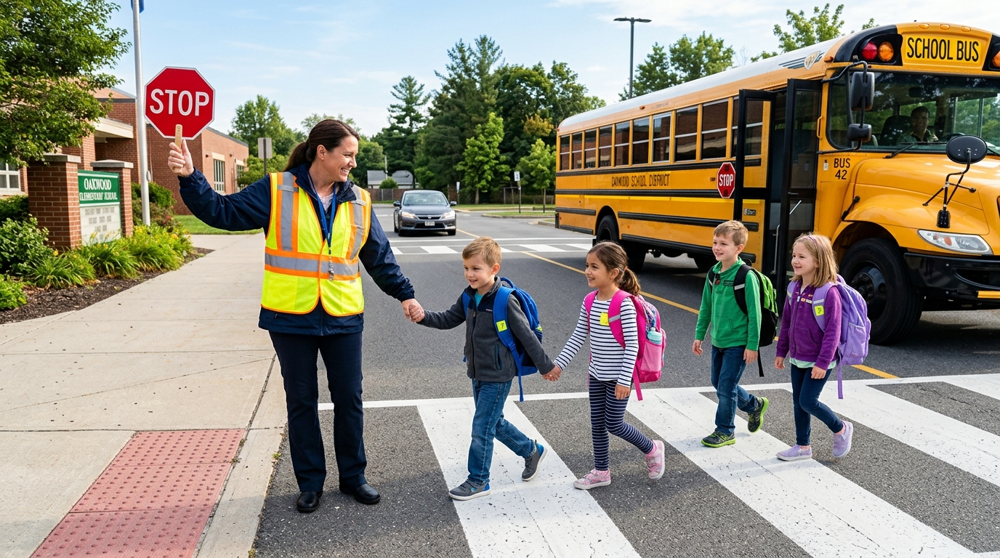

Responsible people, clear procedures, route visibility and communication work together to support dependable student transportation.
From background-verified professionals and daily certified maintenance to dedicated crossing attendants, here is how we ensure your child's safety at every stage.

5-Point VettedEvery driver undergoes strict criminal background audits, bi-annual drug/alcohol screening, and psychometric defensive driving certification before ever sitting behind the wheel.

30-Point Daily AuditEvery morning at 6:00 AM, certified technicians execute electronic OBD-II diagnostic checklists on braking systems, tire tread depth, emergency door seals, and automated fire suppression.

Attendant CareTrained caretakers manage the passenger cabin, assist younger students with 3-point safety seatbelts, enforce the 'No Child Left Behind' end-of-route cabin sweep, and escort kids across roadways.
Every SafeRoute driver undergoes rigorous police background audits, psychometric defensive driving evaluations, and pediatric CPR training before taking the wheel.
Specialist in morning arterial corridors and defensive transit maneuvers with a 100% incident-free safety record.
Senior route captain renowned for punctuality, proactive vehicle pre-checks, and warm rapport with junior students.
Dedicated school coach captain specializing in student boarding protocols, cabin discipline, and smooth transit.
Expert in highway navigation, GPS fleet coordination, and strict adherence to 40 km/h speed safety governor limits.
Pre-trip checklist coordinator ensuring zero equipment faults, RFID tap-in compliance, and secure seatbelt verification.
Lead instructor training all SafeRoute recruits in child safety etiquette, defensive maneuvering, and crisis management.
Driver onboarding follows a documented process.
Vehicles are inspected as part of daily readiness.
Boarding and drop-off are recorded each day.